Certains des procédés d’épuration des fumées produisent des rejets liquides qui nécessitent un traitement complémentaire sur le site avant rejet dans le milieu naturel. Ce traitement particulier des rejets liquides d’une usine d’incinération fait l’objet de la deuxième partie de ce module.
Quand vous aurez terminé ce module vous aurez ainsi une meilleure connaissance :
À la sortie du four, l’incinération des déchets dangereux produit inévitablement des cendres et des mâchefers (parfois appelés scories). De la même façon, si vous allumez un feu de bois dans votre cheminée : à la fin de la combustion, vous remarquez qu’il ne reste qu’un tas de cendres à la place du foyer.
Les mâchefers d’incinération des déchets dangereux – dont le sigle est MIDD – sont principalement constitués de toutes les fractions imbrûlées des déchets, qui se retrouvent à la sortie du four sous forme de produits solides d’aspect grisâtre.
Leurs caractéristiques physiques (quantités et compositions) sont liées à de nombreux facteurs, notamment :
Le module n°5 vous a déjà donné une première estimation des quantités générées par l’incinération d’une tonne de déchets dangereux.
Il était indiqué que 1000 kg de déchets dangereux génèrent en moyenne 150 à 200 kg de mâchefers, plus 30 kg de ferraille, soit un total de 200 kg, représentant 20\
La variation des tonnages de mâchefers produits par les différent fours vient principalement des « menus » d’incinération des déchets qu’ils appliquent. Un incinérateur qui brûlera 50\
VolumeLa densité des mâchefers générés par l’incinération peut également varier selon le type de déchets dangereux incinérés. De l’ordre de 1000 kg/m3, cette densité peut atteindre 1200 kg/m3, après égouttage, déferraillage, concassage et criblage. Les mâchefers représentent ainsi, en volume, environ 10\
On s’aperçoit donc que le traitement des déchets par incinération est un moyen permettant de les réduire considérablement :
Les mâchefers sont assimilables à une sorte de grave gris-noir, contenant des éléments grossiers, à granulométrie variable (la granulométrie définit la mesure de la dimension et la répartition des grains ou des particules).
Dans notre cas, les éléments constituant cette sorte de grave sont constitués de grains, dont la grosseur varie de 4 à 80 mm en moyenne. Ils sont constitués par un mélange hétérogène d’éléments de nature très variée, comme le montre le tableau ci-dessous.
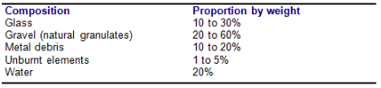
Le potentiel polluant des mâchefers (fraction soluble, ou fraction lixiviable) est la quantité d’éléments polluants (métaux lourds, sulfates, arsenic, matières organiques) susceptibles d’être relargués par les mâchefers lorsqu’ils sont en contact avec un liquide.
Ce caractère polluant est mesuré en partie par la détermination du carbone organique total (COT) de la fraction soluble. Il est mesuré à partir du test de lixiviation réalisé selon la norme X 31-210. Ce test est décrit en détail dans les fiches de définition.
Contenu non brûléLes imbrûlés contenus dans les mâchefers sont mesurés par une valeur appelée le taux d’imbrûlés.
Ce taux est un paramètre important : de sa valeur dépendent les conditions de valorisation des mâchefers (voir chapitre 7). Il varie énormément selon des conditions de fonctionnement réalisées dans le four.
Le taux d’imbrûlés est déterminé par la perte de masse exprimée en pourcentage du poids sec de l’échantillon de mâchefers porté à 500°C pendant 4 heures de calcination.
Il se calcule par la division suivante :
\[ x = {Poids perdu après 4 heures de combustion à 500°C}{Masse initiale des mâchefers secs} \]
Note importante
Remarque importante
Le taux d’imbrûlés doit être inférieur à 5\
Caractéristiques chimiques
La composition chimique d’un mâchefer courant varie selon la production, mais les éléments présents restent globalement les mêmes. Seuls les pourcentages évoluent, dans une fourchette de valeur qui reste connue.
Les corps les plus représentés sont les silicates (SiO2), les oxydes de fer (Fe2O3) et d’aluminium (Al2O3), ainsi que de la chaux. Ils constituent plus de 80\
En revanche, les métaux lourds sont en quantité assez minime (environ 1\
Composition chimique moyenne des mâchefers (en \
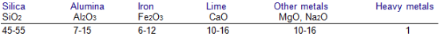
De par leur constitution, les mâchefers présentent des propriétés particulières.
pHLe pH (potentiel hydrogène) des mâchefers en sortie de four se situe généralement entre 10 et 12,5.
D’environ 12 à la sortie du four, sa valeur diminue pour atteindre 10 après un ou deux mois de stockage en andain (en tas longitudinal), sous l’effet des réactions liées à la carbonatation et à l’oxydation.
Comportement évolutifAu contact de l’eau ou en présence d’humidité, les évolutions suivantes apparaissent :
Suite à des analyses granulométriques, à des tests de comportement mécaniques, à des tests de résistance aux chocs et à l’usure, on s’aperçoit que les mâchefers présentent des caractéristiques se rapprochant de certains granulats naturels. C’est la raison pour laquelle il est possible de valoriser les mâchefers d’incinération d’ordures ménagères (MIOM) par utilisation en technique routière ou en remblai selon des prescriptions bien précises . La loi n’autorise pas les mâchefers d’incinération de déchets dangereux (MIDD) à être valorisés et impose qu’ils soient stockés en ISDD.
Les mâchefers sont considérés comme des déchets générés par l’usine d’incinération des déchets dangereux. À ce titre, ils font l’objet d’un suivi réglementé, comme pour les autres déchets dangereux. Une nomenclature des déchets a été établie par le ministère de l’Environnement.
Les bordereaux de transports des mâchefers sont tous identifiés par le numéro 190101.
But et équipements nécessaires.
Cas le plus fréquent : extraction des mâchefers « humides »
Ayant une température d’environ 850 à 1000°C les mâchefers doivent être évacués du four et refroidis aussitôt tout en maintenant l’installation étanche. L’extracteur à mâchefers permet de réaliser ces deux opérations. Constitué d’un caisson une sorte de cendrier rempli d’eau il est situé juste au-dessous de la chambre de post-combustion (PC). Des tôles en acier prolongent la partie la plus basse de la PC réalisant ainsi l’étanchéité avec la garde d’eau.
Les mâchefers tombent dans le caisson d’eau et ils se refroidissent au contact de l’eau. Il se produit un dégagement de vapeur plus ou moins chargée de cendres fines. Par aspiration, cette vapeur rejoint le circuit des fumées. Les quantités d’eau évaporée dans le caisson et qui rejoignent les fumées sont loin d’être négligeable (500 à 1000 kg/h pour un incinérateur de 7 à 8 T/h).
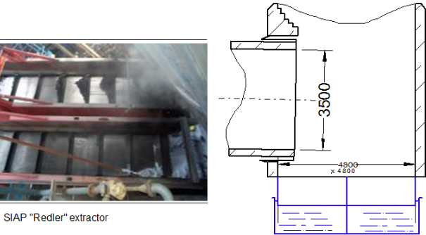
Les extracteurs à mâchefers ont constitués de deux chaînes en boucle qui entraînent des barres métalliques qui raclent le fond du caisson et remontent ainsi les mâchefers.
Les extracteurs à mâchefers (également appelés redler) sont généralement au nombre de deux. Le redler « côté Four », qui fonctionne en continu et qui remonte les mâchefers sortant du four ; le redler « côté PC » qui remonte les cendres qui décantent dans la PC.
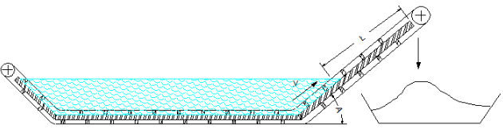
Les principaux paramètres dimensionnels d'un Redler sont les suivants :
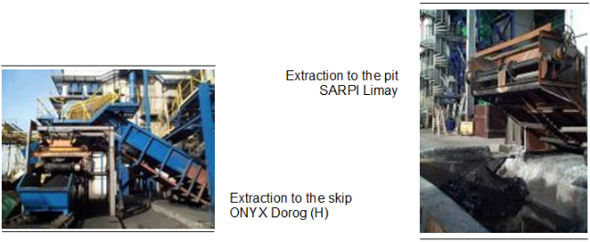
SécuritéLes interventions de dépannage ou autres opérations d’entretien sur les extracteurs à mâchefers doivent être effectuées en respectant strictement les procédures d’opérations spécifiques à votre site, de façon à réduire au minimum les risques d’accidents.
Les extracteurs à mâchefers ont déjà causé d’importantes blessures (brûlures graves) aux personnes intervenantes sur des débourrages ou autres situations similaires, alors qu’elles n’avaient pas respecté toutes les procédures pour garantir leur sécurité pendant l’intervention.
Au-delà du respect des consignes de sécurité, la zone immédiate à proximité des extracteurs doit être considérée comme une zone à risque, et le personnel d’exploitation doit être vigilant s’il circule à proximité. L’accès à cette zone doit être strictement limité au personnel d’intervention.
ManipulationDans la plupart des usines les mâchefers une fois extraits sont déversés dans une fosse en béton. Ils sont ensuite repris par un chargeur sur pneus ou par un pont roulant qui les déverse directement dans une benne.
Les mâchefers sont alors acheminés vers une unité de déferraillage puis, selon leur qualité, vers un centre de traitement par stabilisation ou directement vers une installation de stockage. Les mâchefers ne respectant pas les critères (en particulier COT) en sortie de l’extracteur, sont envoyés vers la fosse à solides pour être incinérés une deuxième fois.
Toute manutention distribution ou alimentation d’équipement de traitement (tri déferraillage criblage…) est en général effectuée à l’aide d’une bande transporteuse entraînée par des moteurs électriques. D’autres noms sont également utilisés pour désigner ce matériel de manutention : tapis sauterelle ou convoyeur.
La photographie ci-dessous montre la manutention des mâchefers et l’alimentation d’équipement de tri par des bandes transporteuses.
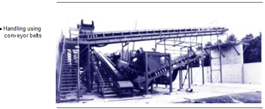
Comme nous l’avons dit précédemment, les mâchefers sont considérés comme des déchets générés par l’usine d’incinération des déchets dangereux. À ce titre, ils font l’objet d’un suivi réglementé.
Leur élimination doit se faire en centre agréé pouvant accepter les « déchets ultimes ». Tout le processus d’élimination des déchets doit respecter la procédure d’élimination des déchets dangeureux, acceptation préalable, DSDI….
Une analyse des caractéristiques des mâchefers doit être réalisée avant le choix de la filière d’évacuation qui pourra être en fonction de la qualité du mâchefer :
Le mot Refidd vient de l’abréviation des mots « Résidus d’Epuration des Fumées d’Incinération de Déchet Dangereux ». Par analogie d’autres usines d’incinération produisent des Refiom pour l’incinération d’Ordures Ménagères, de Refidas pour l’incinération de Déchets d’Activités de Soins et de Refib pour l’incinération des Boues de stations d’épuration.
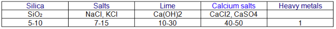
{ Méthode de collecte et de stockage des résidus
Les Refidd (Résidus d’épuration des fumées d’incinération de déchets dangereux) ou les poussières tombent par gravité dans les trémies des dépoussiéreurs. Ils sont par la suite évacués par transport mécanique ou transport pneumatique vers un silo de stockage ou bien vers une station de big-bags (gros sacs étanches). Au cours de leur manutention, ces produits poudreux (pulvérulents), sensibles à l’humidité, ont souvent tendance soit à voûter dans les silos ou trémies, soit à créer des bouchons dans les circuits de transport.
Pour éviter ces phénomènes, il convient d’installer dans les zones sensibles des équipements tels que :
Ces dispositifs permettent la mise en mouvement et évitent ainsi la prise en masse, c’est-à-dire la formation de blocs solides de poussières mélangées à la chaux. Les Refidd collectés sont évacués soit par des camions dans le cas de big-bags stockés sur une plate-forme, soit par des camions-citernes dans le cas des résidus stockés dans des silos. Les camions-citernes sont chargés par gravité depuis le silo de stockage, au travers de manches télescopiques.
Le transport par voie routière des résidus vers une unité de prétraitement ou une Installation de Stockage de Déchets Dangereux (ISDD) doit être effectué de manière à éviter tout envol
Transport des REFIDDTransport mécanique Convoyeur à chaînes
Le principe du convoyeur à chaînes consiste à déplacer le produit maintenu prisonnier entre les parois d’une gaine par entraînement à l’aide de lames métalliques. Ces lames sont fixées à une ou à deux chaînes mises en mouvement par des pignons d’entraînement qui assurent la rotation de la chaîne.
La figure ci-dessous montre le point de chargement des résidus d’épuration par des alvéoles (exemple : trémies sous le dépoussiéreur). Les alvéoles remplies sont transportées horizontalement et verticalement vers le point de stockage temporaire.
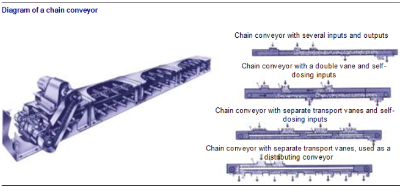
Convoyeur à godets
Le principe du convoyeur à godets, semblable au convoyeur à chaînes, consiste à entraîner des godets fixés sur une chaîne de manutention. Ils sont généralement utilisés comme élévateurs pour acheminer verticalement les Refidd ou les cendres vers le silo de stockage (voir schéma ci-contre).
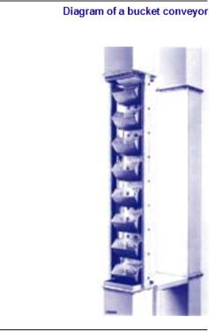
Convoyeur à visLe convoyeur à vis est constitué d’une vis d’Archimède. Entre deux hélices, le résidu est acheminé d’un point à un autre. Le taux de remplissage de la vis peut atteindre 45\
Fréquemment utilisé, le convoyeur à vis donne de meilleurs résultats lorsqu’il déplace des produits de façon horizontale ou vers le bas. Il est souvent utilisé sous les trémies des dépoussiéreurs et des chaudières.
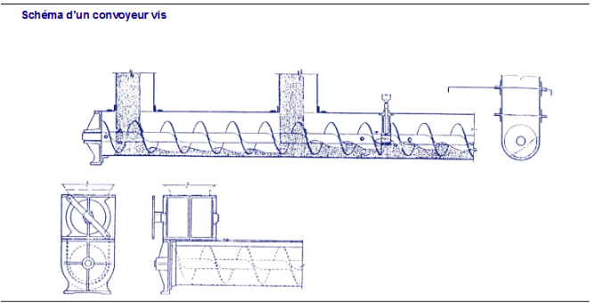
Transport pneumatiqueLe transport pneumatique des Refidd utilise la force motrice de l’air comprimé pour les déplacer de leur point de production (les filtres à manches, par exemple) vers le silo de stockage.
Bien que peu utilisé en incinération, certains systèmes pneumatiques fonctionnent en dépression, c’est-à-dire que l’on aspire les Refidd vers le silo de stockage ; il faut alors surveiller les infiltrations dans les conduites d’air parasite. Pour tous ces systèmes, il est important de préchauffer l’air utilisé pour le transport des Refidd à 120-150 °C afin de diminuer le niveau d’humidité et le risque de blocage.
Les systèmes à pression positive utilisent des pressions variant de 1 à 5 bars selon le type de système. Leur fonctionnement est analogue au système de nos usines de Limay (78) et Rognac (13).
Transport pneumatique de Limay et RognacDes réservoirs sont fixés sous les trémies des filtres à manches pour accueillir les Refidd. Lorsque le niveau de Refidd mesuré par un indicateur de niveau est suffisamment élevé dans la trémie, le « dôme » ou « disque » d’ouverture du réservoir s’ouvre et laisse pénétrer les Refidd à l’intérieur du réservoir, puis se ferme (voir figure ci-dessous). Le réservoir est alors pressurisé et les cendres sont acheminées en une rue de bouchons séparés par des poches d’air.
Les vitesses d’air peuvent atteindre 300 m par minute. La pression baisse rapidement entre le point de départ et le point d’arrivée de façon à obtenir une pression d’arrivée au silo légèrement plus élevée que la pression atmosphérique. L’air de transport est filtré avant d’être expulsée vers l’extérieur.
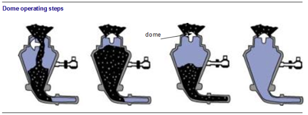
Les systèmes pneumatiques sont très étanches et facilitent l’élévation des Refidd vers les points hauts. Leur mise au point initiale est parfois plus difficile, car ils sont dotés d’une instrumentation plus complexe que des convoyeurs mécaniques. Il faut surveiller l’érosion des conduites et ce particulièrement dans les coudes. En cas de blocage de conduite on réalisera soit un frappage mécanique (dans les coudes) soit une mise en pression pour libérer les bouchons.
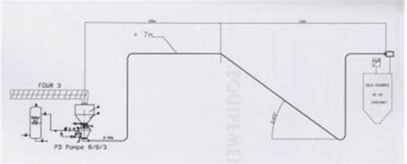
Les REF contiennent la quasi-totalité des polluants initialement contenu dans les déchets (en particuliers, métaux lourds et dioxines). La stabilisation des REFIDD consiste à les mélanger avec de l’eau et des réactif afin d’obtenir une matrice « ciment », dans laquelle seront piégés les polluants. Ces Résidus Ultimes stabilisés peuvent être stockés en CSDU.
Procédés de stabilisationLes procédés consistent à mélanger les REFIDD avec de l’eau, des Gâteaux de Filtre-Presse (GFP) et des réactifs (liants hydrauliques). Les différents produits à mélanger sont stockés dans des stockages appropriés (silos pour les REFIDD et les réactifs, cuves pour l’eau, fosses pour les GFP). Le laboratoire détermine une formule de mélange en fonction de la composition des différents produits à mélanger.
Processus continuLes produits sont précisément injectés, à travers des organes de mesure de débit, dans un ou plusieurs malaxeurs. Le « stabilisat » est évacué en continu vers une benne, puis transporté jusqu’à l’ISDD.
Procédés batchLes différents produits sont introduits après pesée en ligne dans un réacteur-malaxeur. Ce dernier effectue l’opération de mélange pendant quelques minutes, puis livre sa bâchée dans une benne, qui sera ensuite transporté jusqu’à l’ISDD.
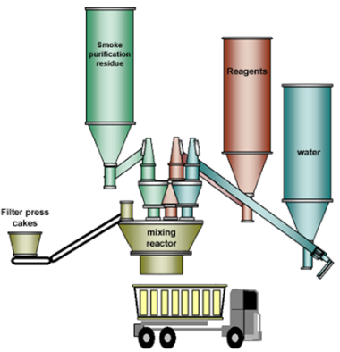
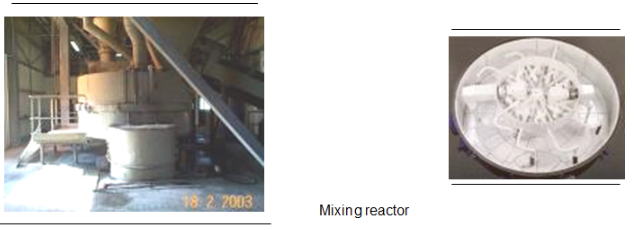
Les stabilisats sont analysés régulièrement pour vérifier qu’ils sont conformes aux normes de lixiviations.
Le batch réalisé est immédiatement transporté sur le CSDU où il est mis en forme dans une alvéole.
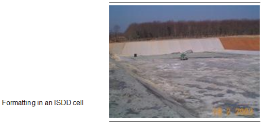
Nous avons vu que le traitement des gaz de combustion par lavage génère des rejets liquides qui contiennent des polluants. Il faut donc les traiter.
L’eau dite potable est d’une qualité contrôlée et sans nuisance à la consommation humaine. Elle provient du réseau d’eau potable qui dessert l’installation.
Eau de forageUn forage vertical à une profondeur approximative de 20 mètres (selon la géologie du sol) permet de soutirer de l’eau provenant de nappes souterraines par une pompe immergée. Cette eau de forage est de moins bonne qualité que l’eau potable, légèrement saline et parfois chargée en fer. Un traitement sur place peut être nécessaire avant son utilisation.
L’eau de forage soutirée est stockée dans une bâche.
Circuit de l’eau au niveau du traitement des gaz de combustionAu niveau d'un procédé humide, l'eau chargée en polluants passe par différentes étapes avant son rejet :
Rappel : Les paramètres les plus importants d’une eau industrielle sont (se reporter également aux fiches de définition jointes aux précédents modules) :
pHIl informe sur la possibilité de l’eau d’être agressive vis-à-vis des matériaux avec laquelle elle est en contact ( tuyaux, instruments…).
Matières en suspensionLes matières en suspension (MES) sont constituées de particules minérales et organiques non dissoutes dans l’eau. Plus la teneur en matières en suspension (exprimée en mg/l) est grande, plus l’eau est dite « chargée ».
Demande chimique en oxygène (DCO)La demande en oxygène est représentative de la quantité de matière organique et minérale qui réagit avec l’oxygène dissous dans l’eau. Elle est donnée en milligramme d’oxygène par litre consommé par les matières dissoutes et en suspension (mg O2/l).
Demande biologique en oxygène (DBO5)La demande biologique en oxygène est la quantité d’oxygène consommée durant cinq jours par la matière organique biodégradable. Elle est exprimée en mg O2/l.
Quantité de métaux lourdsLa quantité des différents métaux lourds dissous dans les eaux que l’usine rejette est un paramètre important dans la qualité de l’eau.
TempératureLa température avant rejet dans le milieu naturel ne doit pas dépasser les 30 °C.
Les eaux de lavage d’un procédé humide épurées au niveau d’un poste de traitement doivent satisfaire aux exigences suivantes :
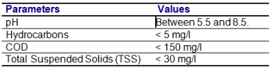
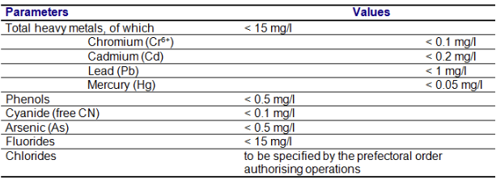
Dans le bilan d’exploitation d’une UIDD, les charges relatives à la consommation d’eau sont relativement importantes, il convient de rechercher toutes les solutions possibles pouvant permettre de réaliser des économies. Le recyclage partiel ou total des eaux industrielles peut être envisagé dans le process d’une UIOM.
Recyclage total des eaux industrielles dans le process Pour recycler totalement les eaux de process, il convient de prévoir un traitement des eaux industrielles.
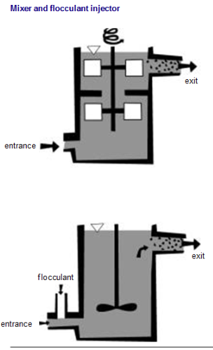
Les eaux industrielles sont essentiellement composées de matières minérales et contiennent :
Compte tenu des éléments décrits ci-dessus, le traitement des effluents industriels en vue d’un recyclage total prévoit les étapes suivantes :
Après les traitements indiqués ci-dessus, le recyclage total des effluents est possible, la consommation d’eau, c’est-à-dire l’ajout nécessaire, ne serait que de 20 à 30\
Description des différents équipements nécessaires au traitement des effluentsFloculateur
C’est la transformation des substances très fines en suspension, les colloïdes sous forme d’agglomérats (« flocs ») plus importants par ajout de chlorure ferrique ou d’aluminium, par exemple. Ces flocs atteignent ainsi un état et une taille qui les rendent décantables.
Décanteur
Le décanteur permet la séparation des particules de taille inférieure à 0,2 millimètre. Généralement, il vient après le traitement physico-chimique des eaux industrielles qui consiste :
Les particules se déposent par gravité. Durant leur chute, elles se heurtent à des flocons déjà formés et se fixent par adsorption, de telle façon que le volume des particules grandit au fur à mesure de la sédimentation.
Filtration
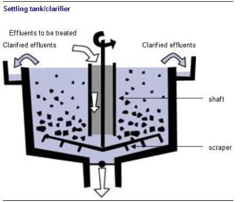
Un filtre-presse se compose d’un grand nombre de corps filtrants en forme de plaque donnant une unité filtrante.
Chacune des plaques est couverte d’une toile métallique en acier ou de poches filtrantes en tissu et montée sur un tube central, qui sert en même temps à l’évacuation du filtrat.
La filtration peut fonctionner avec une pression finale allant jusqu’à une trentaine de bars. Le schéma ci-dessous montre son principe de fonctionnement.
La boue est pressée entre deux corps filtrants qui forment comme un moule (à gâteau) à travers lesquels seule l’eau passe. Ainsi après filtration de l’eau, il reste un « gâteau » de boue qu’il faut démouler des corps filtrants. La filtration est la phase finale de la séparation boues/eau clarifiée.
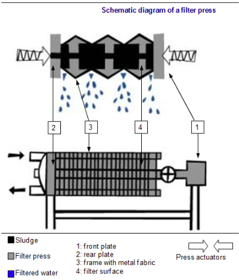
Traitement des rejets liquidesÀ l’heure actuelle, les eaux industrielles traitées sont principalement les eaux de lavage issues d’un procédé humide. Le traitement des eaux a pour but de neutraliser les eaux de lavage et de précipiter les métaux lourds sous forme d’hydroxydes quasi-insolubles. Après déshydratation des boues par filtration, on obtient un « gâteau » contenant des boues déshydratées d’hydroxydes métalliques, qu’il convient d’évacuer vers une unité de stabilisation avant stockage en CET.
Description du traitement (voir schéma ci-dessous)Le but de ce traitement est d’extraire de l’eau tous les composés polluants. Un des meilleurs moyens est de précipiter tous les polluants et de les filtrer. Ainsi les polluants sont réunis sous forme de boue et l’eau filtrée est globalement purifiée.
Pour que les polluants se solidifient et ne soient plus dissous dans l’eau, on provoque des réactions chimiques qui utilisent de la chaux, du chlorure ferrique, de l’insolubilisant, du floculant et de l’acide chlorhydrique. L’ordre des étapes décrites ci-après, est très important pour l’efficacité du traitement. Il s’agit en quelque sorte d’une recette de cuisine qui aboutit à un gâteau (de boue).
Après l’épuration des gaz de combustion par voie humide, les eaux de lavage acides sont d’abord stockées dans la cuve de reprise (1). Elles sont pompées pour se diriger vers le bac de préneutralisation (2) où le lait de chaux (3) et le chlorure ferrique (FeCl3) (4) sont injectés. Cela permet de neutraliser l’effluent acide et de déstabiliser la suspension colloïdale pour former des flocs. Les effluents passent dans le bac de neutralisation (5) où le lait de chaux et l’insolubilisant (6) sont injectés. L’insolubilisant a pour rôle de précipiter les métaux lourds dans une zone de pH optimale obtenue par ajout de lait de chaux.
Par la suite, les effluents arrivent dans le bac de floculation (7) où le floculant (8) est injecté. Cela permet de former des flocs de sels minéraux en vue de leur décantation. Les effluents traités passent dans le décanteur (9) qui est équipé d’un racleur central à vitesse très lente.
En passant dans le décanteur, une première séparation liquide/solide est réalisée : les boues sont amenées dans le puits central et sont soutirées par le bas vers l’épaississeur (10). L’eau clarifiée par débordement de la partie supérieure du décanteur est envoyée vers le bac (6) de remise à pH.
L’épaississeur de boues a pour but d’améliorer la concentration en boues et de les stocker. Les boues soutirées par le bas de l’épaississeur alimentent le filtre-presse (12)de façon séquentielle. L’eau part vers la cuve effluent et les boues déshydratées, appelées gâteau, tombent dans une benne (13). Dans la cuve de remise à pH (11), l’acide chlorhydrique (14) est injectée pour ramener le pH entre 5,5 et 8. Ensuite, l’eau clarifiée est refroidie à environ 30 °C , dans un bac de contrôle (16), avant son rejet (15) vers l’extérieur.
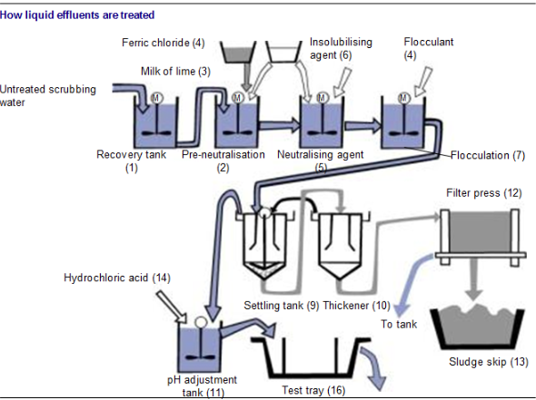
Rôle des réactifs dans le traitement des effluents liquidesLes réactifs suivants sont utilisés pour le traitement de ces eaux de lavage
ChauxLa chaux est un réactif alcalin sous forme d’une poudre blanche. Elle est utilisée sous forme d’un lait de chaux à une teneur de 80 à 100 grammes par litre. L’eau de lavage fortement acide contient principalement de l’acide chlorhydrique dissous HCl et du sulfate de sodium Na2SO4 (à cause du traitement du dioxyde de soufre SO2 par injection de soude au niveau du procédé humide). L’ajout de lait de chaux permet :
Le chlorure ferrique FeCl3 est une solution de couleur orange contenant 41\ Injecté en présence de la chaux, il se transforme en hydroxyde de fer Fe(OH)2. Sous forme d’hydroxyde, il se polymérise, c’est-à-dire que plusieurs Fe(OH)2 sont reliés pour former une chaîne. Il provoque ainsi la coagulation en adsorbant et en agglomérant des particules colloïdales organiques ou minérales dont le diamètre est inférieur au micron (0,000 001 m.). Le pH, contrôlé par ajout de lait de chaux, joue un rôle important sur la coagulation (pH légèrement basique).
FloculantLe floculant utilisé est un polyélectrolyte, un composé chimique muni de nombreuses charges électriques. Par ces multiples charges électriques, il crée des liens entre de nombreux sels minéraux, ainsi il y a formation de flocs.
Le floculant utilisé est un polyélectrolyte, un composé chimique muni de nombreuses charges électriques. Nous pouvons le comparer à une toute petite pieuvre possédant de grandes tentacules chargées électriquement.
L’insolubilisantIl a pour but de précipiter les métaux lourds.
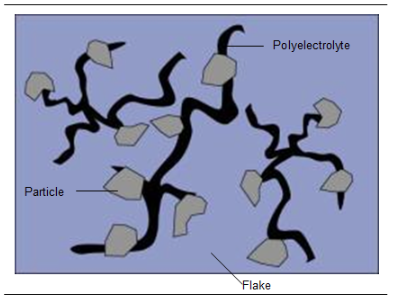